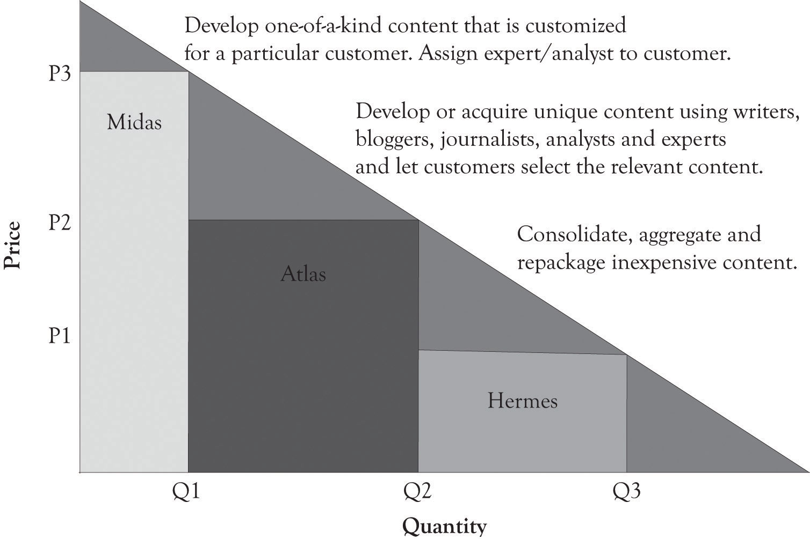

AOL Time Warner lost over $98 billion in 2002. This happened after AOL had purchased Time Warner for $106 billion in 2001.Lieberman (2003). The Time Warner content was supposed to propel AOL, the king of distribution, to the next level. Differentiating content and getting people to pay for the content is one of the most difficult problems facing many companies including newspaper and magazines publishers. As illustrated in Figure 5.12 "Digital Content Differentiation Strategies", it is possible to differentiate content, but it is still difficult to get the consumer to pay for digital content. Many consumers simply do not want to pay for the content because much of the content on the Web was free in the past and even when it was not free, it could be read indirectly by creative searching and by pirating.
Figure 5.12 Digital Content Differentiation Strategies
One way to make all contents desirable is to deliver the content faster and more conveniently than any other business. This can, in some instances, change the demand curve and increase the amount consumers are willing-to-pay for a content version. One way this is being tested is through the use of tablet computers such as the iPad or the Kindle. Delivering content faster and more conveniently than the competition amplifies the value of the content, even aggregated and repackaged content.
One of the challenges of providing content is to develop versions for mobile devices, for traditional Web browsing, and for print media. Content has to be written so that it can be used simultaneously for perusal on a mobile device, on the Web, and in traditional print media.A special note of thanks is extended to Emily Wester, consultant and owner of Magic City Media, for providing insight into the material used in this section. The key is to have different versions of content available that do not cannibalize each other. Headlines can effectively make-or-break a business model. For example, a headline received from a mobile phone should not only be interesting enough so that it is passed on to others, but also tweak the interest of the reader so that they will turn to more in-depth content on the Web or in print. If it provides too much information, then the reader will be satisfied and will not look toward other media outlets. Versioning via the type of media outlet is critical to the survival of content providers. Content needs to be carefully crafted in terms of its length and the information provided so that it conveys some information, but not too much; yet it has to be compelling so that it entices the consumer to delve into other outlets. This is the essence of the versioning process.